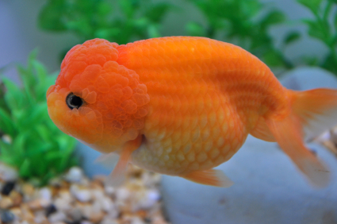

|
PECES |
Sanguijuelas
Son unos gusanos parásitos externos, visibles a simple vista, y que pueden llegar con las nuevas adquisiciones. Se fijan a la epidermis del pez y, si no son muchas, se las puede eliminar físicamente.
Habrá que sacar el pez del agua y aguantarlo con un paño fino y húmedo. Mediante unas pinzas, se cogerá el gusano por el extremo en que se fija al pez y se le desprenderá mediante un tirón seco. Para evitar posibles infecciones habrá que tratar la zona afectada por la mecromina. Por motivos obvios, es conveniente que la intervención se haga lo más deprisa posible. También es muy útil contar con algún ayudante.
Hidropesía
Si observa que un pez se hincha hasta el extremo de que parezca que está a punto de explotar, lo más probable es que padezca de hidropesía. Otra de las características típicas de esta enfermedad consiste en que se produce un erizamiento de las escamas hasta el punto de que el cuerpo parece una piña.
La hidropesía puede ser de origen bacteriano o vírico, siendo la calidad del agua uno de los principales factores desencadenantes.
